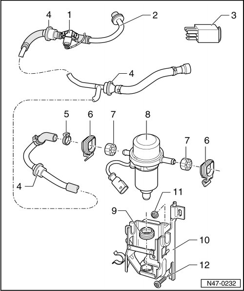

Brake System Vacuum Pump Assembly Overview
Brake System Vacuum Pump Assembly Overview
Only on vehicles with gas engines and automatic transmissions.

1 Brake booster pressure sensor (G294)
2 Vacuum hose
• To brake booster.
3 Brake booster relay (J569)
4 Check valve
Functional check, refer to --> [ Check Valve, Checking ] Check Valve, Checking.
5 Clamp
• Replace.
6 Clip
7 Buffer stop
8 Brake system vacuum pump (V192)
• Removing and installing, refer to --> [ Brake System Vacuum Pump ] Brake System Vacuum Pump.
9 Buffer stop
10 Bracket
• Allocation.
11 Nut
12 Bolt